dd_ftp tutorial
A terminal FTP / SFTP / FTPS client. This page walks through install, first launch, connecting to a host, and the everyday loop: browse, mark, transfer, and manage files from a dual-pane TUI.
What it is
dd_ftp is a keyboard-and-mouse dual-pane browser for remote files. Local is on the left, remote on the right, transfers in the queue along the bottom. Protocols: SFTP, FTP, and FTPS.
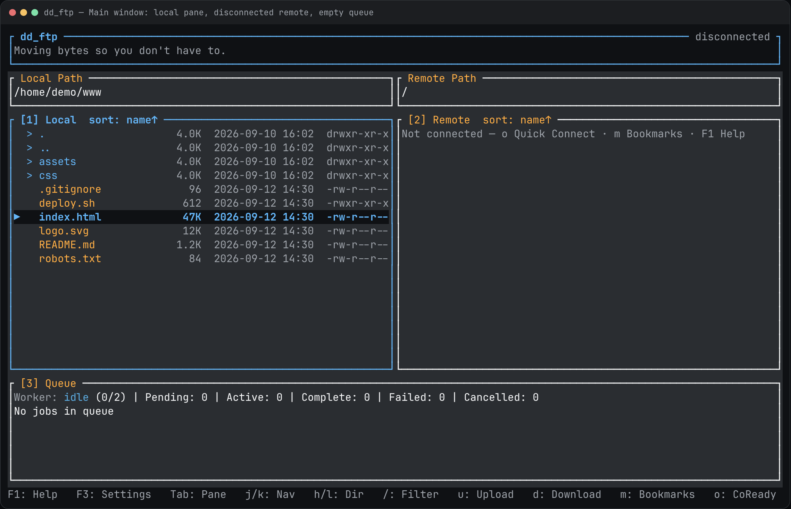
What you get:
- SFTP, FTP, and FTPS connect / list / upload / download
- Parallel transfer workers, cancel, retry, overwrite prompts
- Bookmarks with OS-keyring passwords (never stored in site config)
- Directory compare badges, filters, multi-select, chmod, remote edit
- YAML theme plus an in-app F2 color editor
Install
Quick install (recommended)
Downloads the prebuilt package for your OS and CPU (Linux, macOS, or Windows) and installs dd_ftp to ~/.local/bin. If no package exists for your machine, the script builds from source. Pipe to bash, not sh.
curl -fsSL https://raw.githubusercontent.com/ldnddev/dd_ftp/master/install.sh | bashPin a release:
curl -fsSL https://raw.githubusercontent.com/ldnddev/dd_ftp/master/install.sh | bash -s -- --version v1.6.1The installer warns if the target directory is not on PATH. Add ~/.local/bin if dd_ftp is not found after install.
From a local checkout
./install.sh # release cargo build → ~/.local/bin
./install.sh --from-release # GitHub package even from a checkout
INSTALL_DIR=/usr/local/bin ./install.sh
BIN_NAME=dd_ftp_cli ./install.shDevelopment run (no install)
cargo run -p dd_ftp_cliFirst run
Launch from a terminal:
dd_ftpThe local pane opens on the current directory. Ctrl+q quits (confirms if transfers are active). Esc never quits — it closes a modal, then compare, then clears marks.
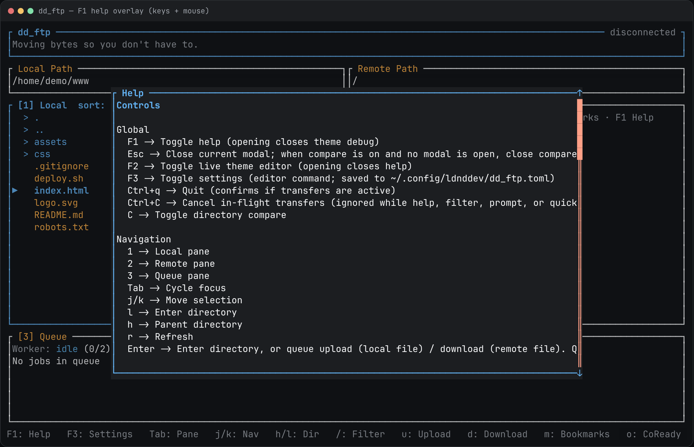
Optional environment variables pre-fill Quick Connect at launch:
export DD_FTP_HOST=your.server.com
export DD_FTP_PORT=22
export DD_FTP_USER=your_username
export DD_FTP_PASS='your_password' # or DD_FTP_KEY
export DD_FTP_KEY="$HOME/.ssh/id_rsa"
export DD_FTP_PATH=/The window
- Header — app name, a rotating tagline, and connection state on the right.
- Local Path / Remote Path — current working directories above each list.
- [1] Local — files on this machine. Folders are prefixed with >.
- [2] Remote — files on the server once connected; empty while disconnected.
- [3] Queue — pending / active / completed / failed / cancelled jobs, with speed and ETA.
- Status line — toasts and the latest status message.
Focus a pane with 1 / 2 / 3 or Tab. Move with j/k. l enters a directory, h goes to the parent, r refreshes. Enter on a directory enters it; on a file it queues an upload (local) or download (remote).
Connect
Quick Connect
Press o. Fill Name, Host, Port, User, Pass and/or SSH Key, Protocol (SFTP / FTP / FTPS), and Path. c connects; if you are already connected it disconnects first.
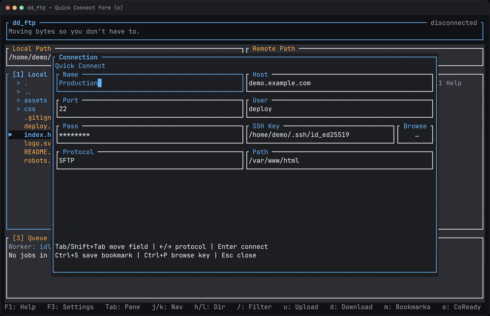
Passwords are stored in the OS keyring, keyed by (name, username, host, port). They are never written to the bookmark TOML. Ctrl+K runs a keyring health check.
Save the current form as a bookmark with B.
Bookmarks
Press m. j/k move, Enter loads into Quick Connect, c (bookmarks) connects the highlighted site, e (bookmarks) edits, d (bookmarks) deletes with confirm, D sets the default. b cycles bookmarks from the main window.
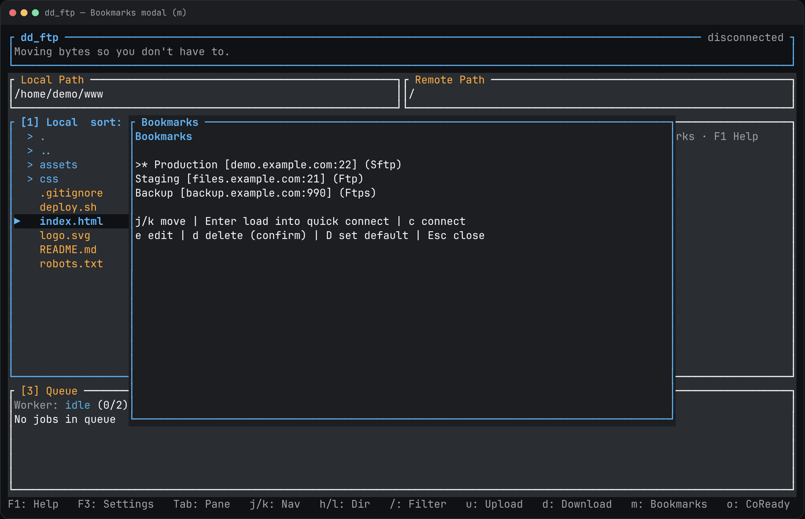
Once you are connected
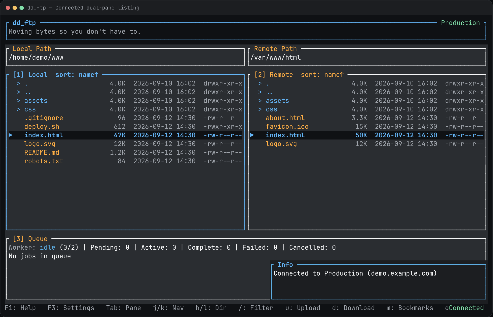
Transfers
Highlight a file (or mark a set) and press u to upload or d to download. Directories recurse. Enter on a file does the same in the focused pane.
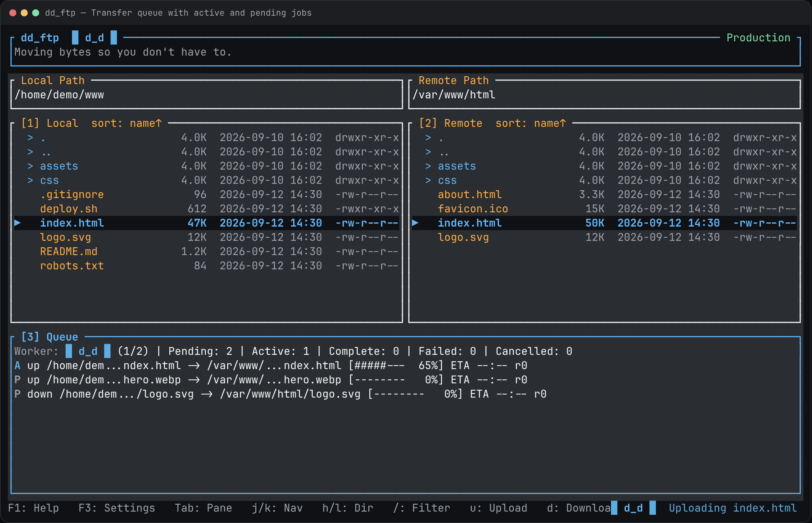
If the destination already exists you get an overwrite prompt:
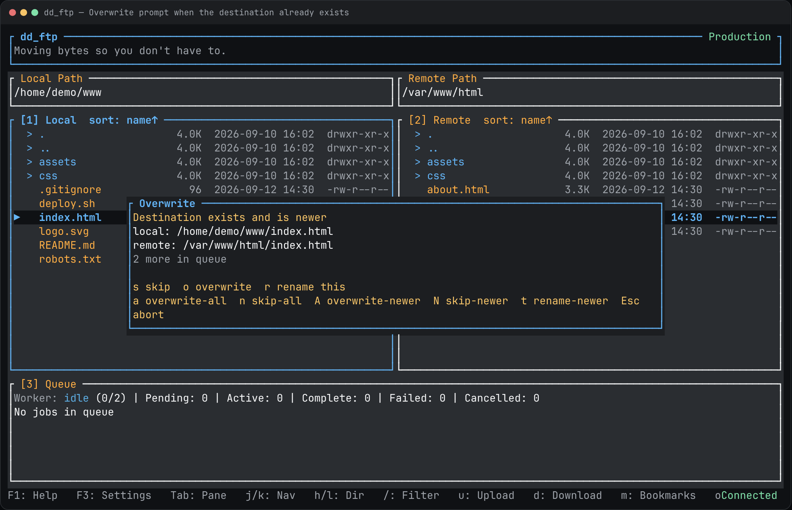
M moves: transfer to the other pane, then delete the source on success.
File operations
n or Ctrl+n creates. Tab toggles file vs folder. e (or Ctrl+Alt+e) renames. Delete (or Ctrl+Delete) deletes the marked set or the focused row, with confirm.
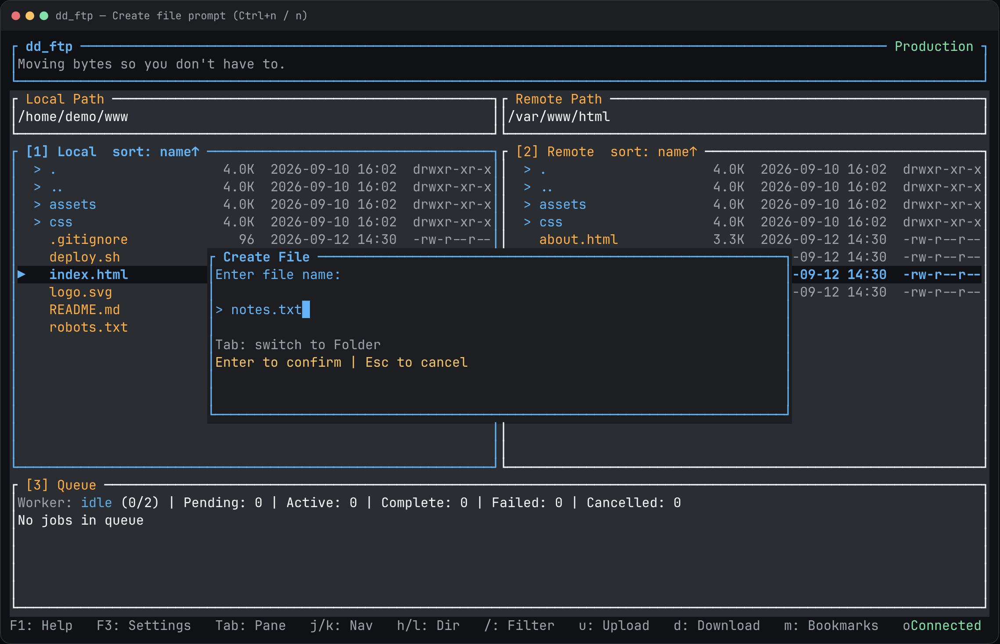
- Space toggles a mark on the focused row (not
./..). Pane titles show a mark count. - Shift+j/k extend the mark range while moving. Shift+click does the same with the mouse.
- E edits a remote file in
$VISUAL/$EDITOR(or the Settings editor) and uploads on change. - p is SFTP chmod on the remote pane.
- s cycles sort: name → size → date → name. S flips direction. . hides dotfiles.
Filter and compare
/ opens a filter on the focused file pane. Type a substring; Esc closes and clears.
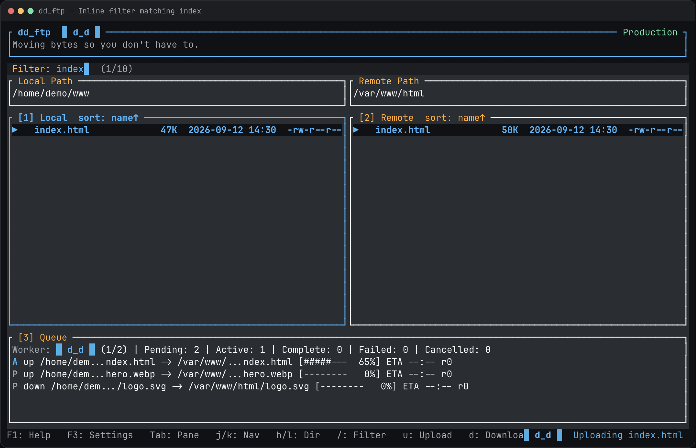
C toggles directory compare. Badges appear on matching names in both lists:
| Badge | Meaning |
|---|---|
| [L] | Name exists only on the local side |
| [R] | Name exists only on the remote side |
| [=] | Same size and mtime (second resolution) |
| [≠] | Same name, different size or mtime |
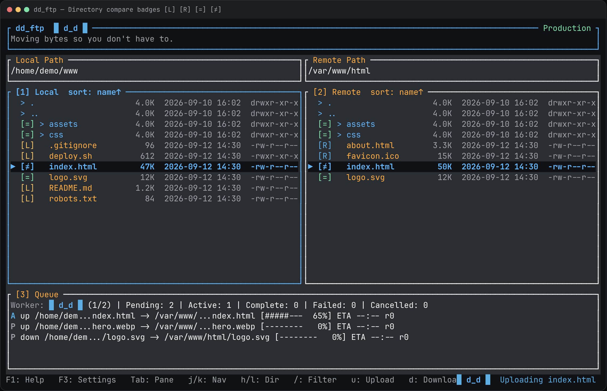
Theme and settings
Theme lookup order:
./dd_ftp_theme.yml~/.config/ldnddev/dd_ftp_theme.yml- Built-in defaults
F2 opens the live color editor. Preview tokens, then save to the local or global YAML file.
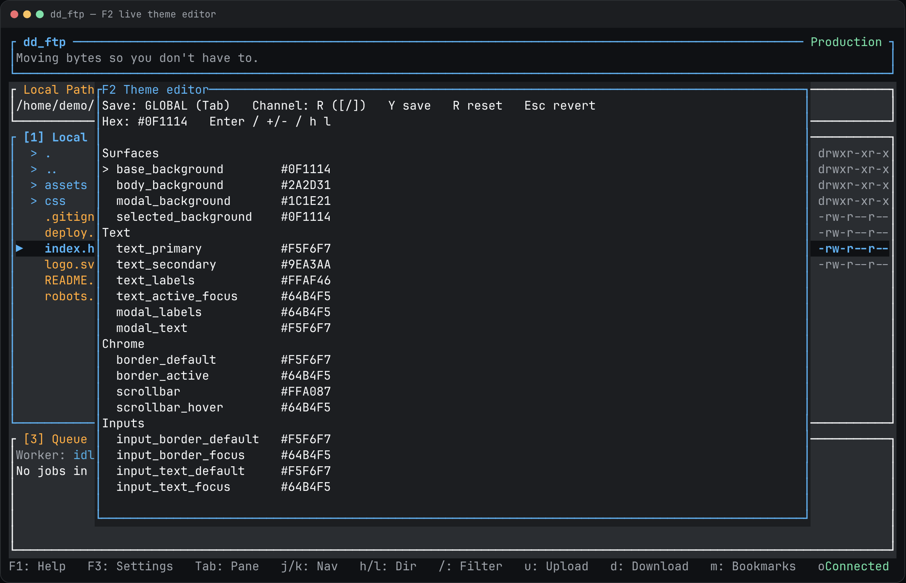
THEME_STRUCTURE_STANDARD.md. Do not hardcode colors past the theme load.F3 is Settings. Today it has one field: Editor, saved to ~/.config/ldnddev/dd_ftp.toml (not the theme file).
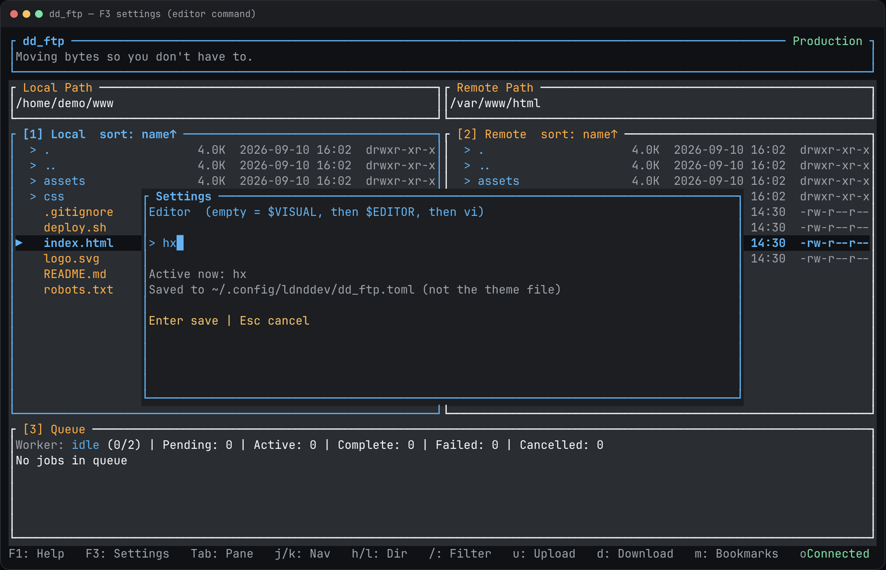
$VISUAL, then $EDITOR, then this saved value, then vi. Leave the field empty to use the environment / vi. Enter saves, Esc cancels.Keys and mouse
The in-app help (F1) is generated from the same table. Mouse works on lists, the queue, help, scrollbars, and text fields.
Global
| Keys | Action |
|---|---|
| F1 | Toggle help (opening closes theme debug) |
| Esc | Close current modal; when compare is on and no modal is open, close compare; otherwise clear marks |
| F2 | Toggle live theme editor (opening closes help) |
| F3 | Toggle settings (editor command; saved to ~/.config/ldnddev/dd_ftp.toml) |
| Ctrl+q | Quit (confirms if transfers are active) |
| Ctrl+C | Cancel in-flight transfers (ignored while help, filter, prompt, or quick-connect is open) |
| C | Toggle directory compare |
Navigation
| Keys | Action |
|---|---|
| 1 | Local pane |
| 2 | Remote pane |
| 3 | Queue pane |
| Tab | Cycle focus |
| j/k | Move selection |
| l | Enter directory |
| h | Parent directory |
| r | Refresh |
| Enter | Enter directory, or queue upload (local file) / download (remote file). Queue pane: no-op. |
Connection / bookmarks
| Keys | Action |
|---|---|
| o | Quick connect |
| m | Bookmarks modal |
| b | Cycle bookmarks |
| c | Connect using the quick-connect form / disconnect if already connected |
| c (bookmarks) | Connect the highlighted bookmark (disconnects first if already connected) |
| d (bookmarks) | Delete bookmark with confirm |
| e (bookmarks) | Edit bookmark |
| D | Set default bookmark |
| B | Save current quick-connect as bookmark |
| Ctrl+K | Keyring health check |
| Ctrl+P (SSH Key) | Open SSH key file picker from the SSH Key field |
Transfers
| Keys | Action |
|---|---|
| u | Queue upload (directories recurse; marked set or focused row) |
| d | Queue download (directories recurse; marked set or focused row) |
| R | Retry last failed |
| X | Clear pending queue |
| Ctrl+C | Cancel in-flight transfers |
| Enter | On a file, queue upload/download of the marked set (or focused row) |
| s skip o overwrite r rename a overwrite-all n skip-all A overwrite-newer N skip-newer t rename-newer Esc abort | Overwrite prompt. Newer dest: A/N/t apply to remaining dest-newer files in the queue |
Filters / compare
| Keys | Action |
|---|---|
| / | Toggle filter (Esc closes and clears the pattern) |
| C | Toggle directory compare |
| Esc | Close compare when no modal is open |
File operations
| Keys | Action |
|---|---|
| n | Create (alias of Ctrl+n) |
| Ctrl+n | Create file/folder prompt (Tab toggles file/folder) |
| e | Rename selected item |
| E | Edit remote file in $VISUAL/$EDITOR, then upload on change |
| Ctrl+Alt+e | Rename (alias) |
| Delete | Delete marked set or focused row with confirm |
| Ctrl+Delete | Delete with confirm (alias) |
| Space | Toggle multi-select mark on the visible focused row (not . / ..) |
| Shift+j/k | Extend mark range from the anchor while moving |
| M | Move marked set or focused row to the other pane (transfer, then delete source on success) |
| p | SFTP chmod prompt (remote pane) |
| s | Cycle sort key: name → size → date → name |
| S | Toggle sort direction |
| . | Toggle hide-dotfiles |
Mouse
| Keys | Action |
|---|---|
| Mouse: wheel | Scroll list / queue / help (also over the scrollbar rail) |
| Mouse: click row | Focus pane, select visible row |
| Shift+click | Extend mark range from the previous row to the clicked row |
| Mouse: double-click dir | Enter directory |
| Mouse: double-click file | Queue transfer (same as Enter) |
| Mouse: drag scrollbar | Scroll |
| Mouse: QC / prompt field click-drag | Cursor / selection |
Keyboard field editing
Quick-connect fields and text prompts:
- Left / Right move the cursor one character
- Shift+Left / Shift+Right extend the selection
- Home / End jump to start / end (Shift to extend)
- Delete removes the character at the cursor (or the active selection)
- Ctrl+W deletes the previous word
Uninstall
curl -fsSL https://raw.githubusercontent.com/ldnddev/dd_ftp/master/install.sh | bash -s -- --uninstall
# or from a checkout
./install.sh --uninstallRemoves the installed binary and the default theme copy. Bookmarks in ~/.config/ldnddev/ and keyring secrets are left in place so a reinstall can pick them up.
Updating screenshots
Every figure on this page is a PNG under docs/images/, generated from the live TUI. Do not edit the PNGs in an image editor — change the capture scene and regenerate.
./docs/capture.shThat script:
- Runs
cargo run -p dd_ftp_cli --example tutorial_shots --release, which builds a fixtureAppState, draws each scene with ratatui’sTestBackend, and writes HTML frames todocs/images/_frames/(gitignored). - Runs
node docs/rasterize.mjs, which opens each frame in Chromium via Playwright and screenshots the.shotcard todocs/images/<id>.pngat 2×. - Greps this page for
images/*.pngand exits non-zero if a referenced file is missing.
Requirements: Rust toolchain, Node with the playwright package, and Chromium at /usr/bin/chromium (or set TUTORIAL_CHROMIUM). Full notes, the shot catalog, and how to add a frame: docs/README.md.
Do not point $HOME at a real user directory while capturing. The example isolates HOME under /tmp/dd-ftp-home so private paths never appear in the PNGs. Do not check in docs/images/_frames/.